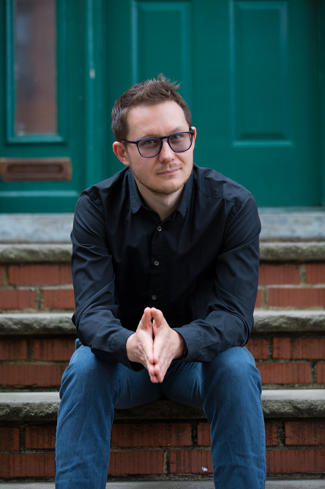

I'm a Senior QA Automation Engineer with 8+ years of experience designing, scaling, and owning automated test frameworks for web, mobile, and API-driven SaaS platforms.
My core strength is building automation infrastructure that actually holds up in production — migrating legacy suites, embedding quality gates into CI/CD pipelines, and reducing release risk through measurable outcomes. I work at the intersection of engineering and product, partnering closely with developers and PMs to shape quality strategy from the earliest stages of each sprint.
I've led test automation at scale — from migrating 300 Cypress tests to Playwright and achieving 70% coverage at BioDigital, to building BDD frameworks from scratch at Namely and implementing mobile automation at Yandex. Increasingly, I apply AI-assisted tooling and LLM-powered workflows to accelerate test generation and authoring.

Work spanning web, mobile, and API platforms — from migrating legacy test suites to building automation frameworks from the ground up.
Led the full migration of 300 Cypress E2E tests to Playwright for BioDigital's 3D human anatomy platform, achieving 70% test coverage and significantly improving suite reliability and maintainability.
Visit Project ↗Introduced Selenium with Java for UI testing at Epam, integrating continuous testing into the CI/CD pipeline and cutting regression cycle time from 4 to 2 days. Paired with RestAssured for API validation and deep SQL data verification.
Visit Project ↗Designed and implemented a hybrid Selenium/Cucumber BDD automation framework from scratch for Namely's HR SaaS product, boosting test coverage by 75% and enabling faster, higher-quality releases.
Visit Project ↗Built a Page Object Model framework using Cypress with BDD Cucumber for Sophia Learning's e-learning platform, automating cross-browser functional and regression testing across the full product.
Visit Project ↗Implemented Appium-based mobile automation for iOS and Android at Yandex.Eats, delivering comprehensive regression coverage for the food delivery app and increasing team efficiency by 30%.
Visit Project ↗Based in Miami, FL / New York City, NY and open to relocation. Looking for senior QA engineering roles where automation quality, CI/CD ownership, and AI-powered testing matter.